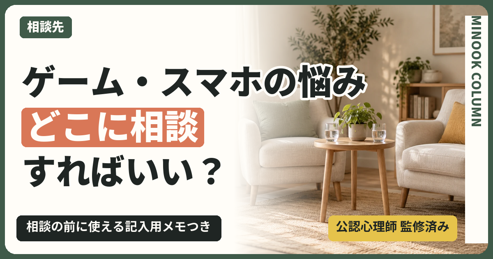

目次
この記事のポイント
- 相談先は「依存かどうか」ではなく、いま何に困っているかで選ぶ
- 本人が行きたがらなくても、家族だけで相談できる場所がある
- 相談の前に、いつから・何に困っているかをメモしておくと話が進む
子どものゲーム依存が心配なときや、スマホの使い方で相談したいときは、「依存症かどうか」を先に見極めようとするより、「いま家庭で何に困っているか」から相談先を選ぶほうが、話が早く進みます。本人が行きたがらなくても、家族だけで相談できる場所はあります。
夜中までゲームをしていて、朝起きられない日が続いている。注意すると言い合いになり、家の空気が重い。誰かに相談したいけれど、病院に行くほどなのか、学校に話していいのか分からず、そのまま時間が過ぎていく。こうした迷いを抱えている保護者の方は少なくありません。
この記事では、相談を考えてよい目安、困りごと別の相談先の選び方、本人が行きたがらないときの進め方、相談の前に書いておくと話が進む記入用メモ、相談までの手順を用意しました。
1.相談するのに「早すぎる」ことはない
相談をためらう理由として多いのが、「まだ相談するほどではないかもしれない」という迷いです。けれど、相談は「依存症になってから」行くものではありません。家族が困っていると感じた時点で、相談してよいと考えてください。
目安にしやすいのは、使っている時間の長さよりも、生活への影響です。たとえば次のようなことが続いているなら、一度だれかに話してみるきっかけになります。
- 夜遅くまで使っていて、朝起きられない日が続いている
- 学校や部活を休む日が増えている
- 使い方の話になると、言い合いや物に当たることが続いている
- 課金など、お金のことで困りごとが起きている
- 家族が疲れていて、どう関わればいいか分からなくなっている
最後の項目も、立派な相談の理由です。相談先は、子どもを診るところであると同時に、困っている家族を支えるところでもあります。
2.ゲーム・スマホの悩み別の相談先の選び方
相談先は、いま一番困っていることに合わせて選ぶと迷いにくくなります。次の表は、よくある困りごとと、最初に相談しやすい窓口の組み合わせです。
| いま一番困っていること | 最初に相談しやすいところ | 相談できること |
|---|---|---|
| 学校を休む日が増えている | 担任の先生、スクールカウンセラー | 学校での様子の共有、登校についての相談 |
| 家庭での関わり方が分からない | 精神保健福祉センター、保健所の依存症相談 | 家族からの相談、家族向けの教室の案内 |
| 眠れない・気分の落ち込みが続く | 医療機関（児童精神科、精神科、ネット・ゲーム・スマホ依存の専門外来） | 診察、心と体の状態の確認 |
| 同じ悩みの家族と話したい | 家族会 | 経験の分かち合い |
| 継続して関わり方を一緒に考えたい | 民間のカウンセリング | 家族の関わり方の相談（診断・治療は行わない） |
精神保健福祉センターは、都道府県や政令指定都市に置かれている公的な相談窓口で、ネットやゲームを含む依存の相談を、本人だけでなく家族からも受けているところがあります。まずは電話で、家族だけで相談できるか、予約が必要かを確かめると確実です。
医療機関を探すときは、久里浜医療センターが公表している「ゲーム障害・ネット依存・スマホ依存の治療施設リスト」が手がかりになります。2026年8月の時点で、リストには全国116の施設が載っています。ただし地域による差が大きく、近くにない県もあるため、まずは地域の精神保健福祉センターに相談し、紹介してもらうのも一つの方法です。医療機関での受診は、ほかの病気と同じように保険診療で受けられます。
3.本人が行きたがらなくても、家族だけで相談できる窓口がある
「本人が行かないと意味がないのでは」と考えて、相談を先延ばしにしてしまう家族は少なくありません。けれど、本人がすぐには相談に向かわないのは、珍しいことではありません。ネット・ゲーム依存の専門治療施設を対象にした調査（令和5年度、81施設が回答）では、困りごととして「患者本人が来院しない」を挙げた施設が44.4%ありました。
本人が来ない状態は、相談先にとっても想定の範囲です。家族だけで相談に行き、家庭での関わり方を整えることは、それ自体が大切な一歩になります。家族の関わり方が変わることで、家の中の言い合いが減り、本人が話を聞きやすくなることもあります。
本人に相談のことを伝えるときは、責める形にしないことが大切です。
01
よくある言い方依存症かもしれないから、病院に連れて行くからね。
言い換えると家族として困っていることがあって、相談に行ってみようと思うんだ。一緒に来てくれたらうれしいけど、無理にとは言わないよ。
ポイント本人を問題扱いせず、親が自分のために相談する形で伝える
02
よくある言い方このままだとまずいから、カウンセリングを受けなさい。
言い換えると最近、夜遅くまで起きている日が続いていて心配なんだ。話を聞いてくれる人がいるみたいだから、気が向いたら教えて。
ポイント心配を事実で伝え、行くかどうかの判断は子どもに残す
4.相談の前に書いておきたいメモ
相談の場では、緊張して言いたいことの半分も話せなかった、ということがよくあります。次のメモを相談の前に埋めておくと、限られた時間でも状況が伝わりやすくなります。全部埋まらなくても構いません。
| 整理すること | メモ |
|---|---|
| いつごろから気になっているか | |
| 平日の1日の過ごし方（起きる時刻・寝る時刻・使っている時間帯） | |
| いま一番困っていること | |
| これまでに家庭で試したこと（うまくいったこと・いかなかったこと） | |
| 本人の様子や、本人が話していること | |
| 家族の気持ちや、疲れていること | |
| 相談で知りたいこと |
以下は架空の記入例です。中学2年生の子どもについて、保護者が相談の前に書いた場合を想定しています。
| 整理すること | メモ |
|---|---|
| いつごろから気になっているか | 夏休みの終わりごろから |
| 平日の1日の過ごし方（起きる時刻・寝る時刻・使っている時間帯） | 7時半に起きられない日が週3日。夜は1時ごろまでゲームをしている |
| いま一番困っていること | 朝起きられず、遅刻が増えている。注意すると言い合いになる |
| これまでに家庭で試したこと（うまくいったこと・いかなかったこと） | 一度スマホを取り上げたが、家族のタブレットを使うようになった |
| 本人の様子や、本人が話していること | 「友だちと約束している」と言う。学校の話はあまりしない |
| 家族の気持ちや、疲れていること | 毎晩の言い合いで、母親が疲れている |
| 相談で知りたいこと | 夜の使い方をどう話し合えばいいか。病院に行ったほうがいいか |
相談では、「うちの子は依存症ですか」と診断名から尋ねるより、メモにあるような事実を伝えるほうが、相談先も状況をつかみやすくなります。困っている場面を具体的に話すことが、合った助言につながります。家庭での取り上げやルール作りについては、スマホ・ゲームの取り上げは逆効果？ 決めておきたい3つのことや中学生のスマホルールが守られない理由｜続く決め方とテンプレートも参考にしてください。
5.医療機関への相談を考えたいとき
家庭での関わり方の相談と並行して、医療機関に相談したほうがよい場面もあります。たとえば、眠れない状態や気分の落ち込みが続いているとき、食事がとれないとき、物を壊す・家族に手を上げるといったことが続くときです。
診断や治療は医療機関で行います。カウンセリングや家族の相談窓口は、診断をつける場所ではありません。迷ったときは、精神保健福祉センターやかかりつけの小児科に「どこに相談したらよいか」をそのまま尋ねてかまいません。
命や安全に関わる状況では、相談先を選んでいる時間はありません。この記事の最後にある緊急時の相談先に、すぐに連絡してください。
6.相談までの4つの手順
最後に、初めて相談するときの進め方です。
初めて相談するまでの進め方
- メモを書く
上の記入用メモを、分かるところだけ埋めます。家族で話し合いながら書くと、困りごとが整理されます。
- 相談先を1つ選ぶ
表の中から、いま一番困っていることに合う相談先を1つ選びます。迷ったら、地域の精神保健福祉センターから始めます。
- 電話で確かめる
家族だけで相談できるか、予約が必要か、費用がかかるかを確かめます。
- 相談のあとに振り返る
相談で聞いたことと、家庭で試すことを1つだけ決めて、メモに書き足します。
子どものことで相談に行くのは、親として力が足りないからではありません。困りごとを一人で抱え込まず、外の力を借りることは、子どもと家族の毎日を立て直すための、ごく自然な選択です。迷っているなら、まずはメモを1枚書くところから始めてみてください。
7.よくある質問
相談にお金はかかりますか？
本人に内緒で相談してもいいですか？
学校に相談すると、子どもの評価に響きませんか？
ゲーム依存の相談は、病院なら何科に行けばいいですか？
オンラインで相談できるところはありますか？
運営者